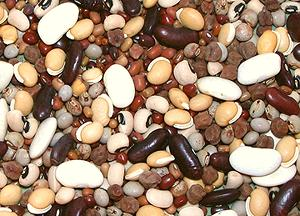

Soaking / Brining Dried Beans

Some cookbooks urge you to soak beans (usually overnight) before
cooking - others tell you not to bother. Mexicans generally do not
soak their beans, but writers of cookbooks for other cuisines almost
always tell you to soak. Many writers in magazines and on-line tell
you not to bother. All this results in considerable confusion.
What, exactly, is the truth?
More on working with Beans Peas &
Lentils.
Soaking:
It is certainly true that dried
beans can go directly in a pot with water and be cooked satisfactorily
in one shot - so why soak?
- Soaking beans cuts the cooking time at least in half. This will often
make scheduling a recipe much easier.
- Presoaked beans tend to break up less when cooked, making for better
appearance.
- You can discard the soaking liquid. It will contain some of the
indigestible complex sugars that result in gas generation and farting.
Mexicans don't care about this because they eat beans so often they've
developed enzimes to digest those sugars.
Brining:
This is a new take on soaking and highly
recommended. This is a normal soak, but with 1/2 Tablespoons of
salt per cup of beans added to the soaking water. Rinse after draining.
The salt makes the skins more permeable resulting in beans that cook more
quickly, more evenly and with less breaking up than with any other method.
In my opinion it also reduces flatulence. This method, developed by the
Cooks Illustrated kitchens, has been confirmed by other testers.
Quick Brine:
This method seeks the advantage
of brining but taking less time. Put the beans in a pot with about the
normal amount of soaking water and 1/2 Tablespoons of salt per cup of
beans. Bring to a boil and immediately take off the heat. Set aside for
at least an hour before draining, rinsing and cooking.
Lentils:
These are rarely soaked and if they are it's for
no longer than an hour or two. Red lentils in particular are peeled so
they cook very fast and are never soaked.
Dal:
For southern Indian cooking, dal (split and peeled
beans, peas and lentils) are not pre-soaked unless a particularly creamy
texture is desired. In any case, dals need only a fraction of the soaking
time of whole beans, peas and whole lentils.
Cooking:
Salt or no salt? Some hold that if you cook beans
in water with salt added before they are completely cooked you will have
tougher beans than with no salt. Tests by the Los Angeles Times kitchen
have disproven this, and other testers are of similar opinion.
bp_soak 121115 - www.clovegarden.com
© Andrew Grygus - agryg@clovegarden.com - Photos on
this page not otherwise credited are ©
cg1.- Linking to and non-commercial use of
this page permitted.